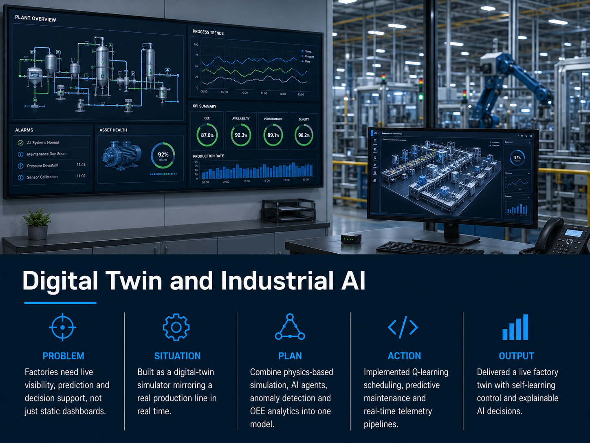
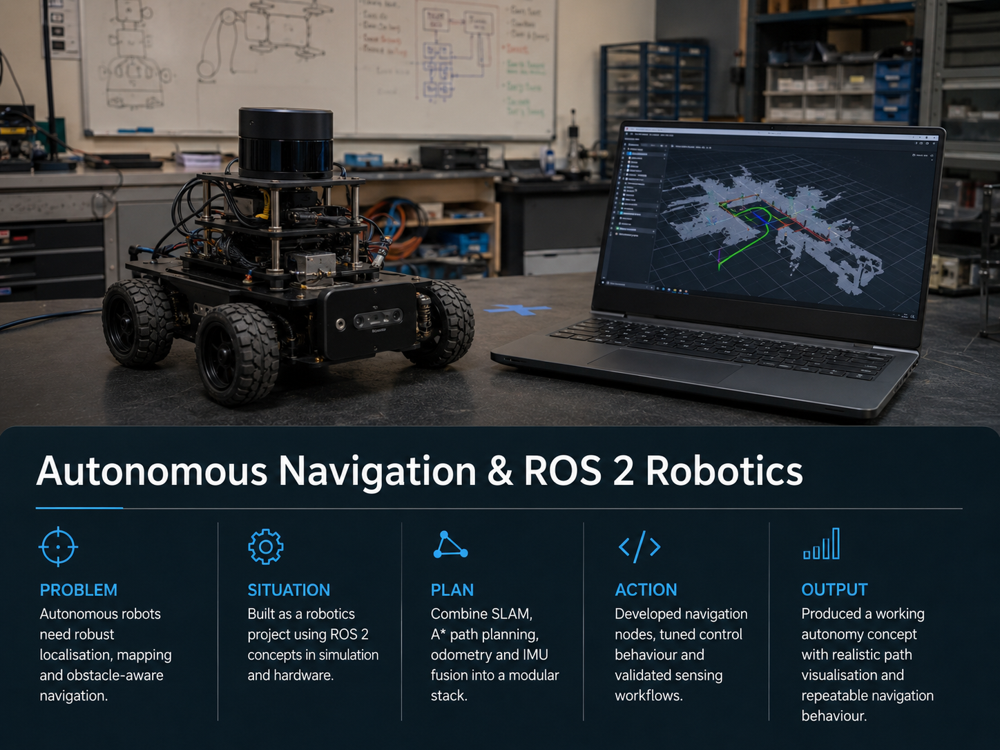
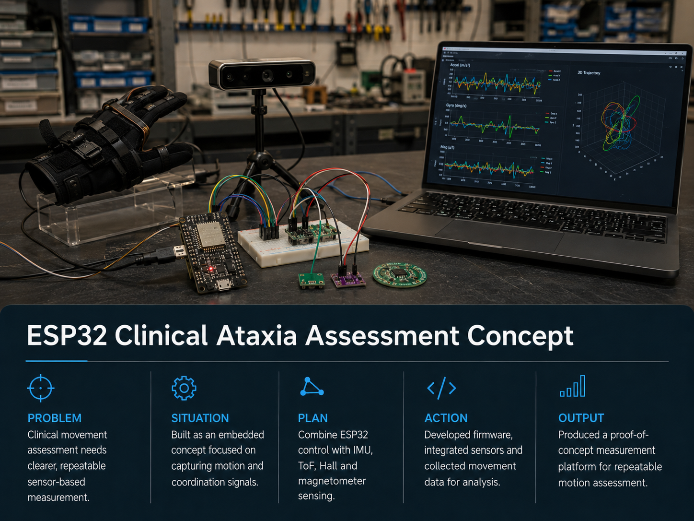
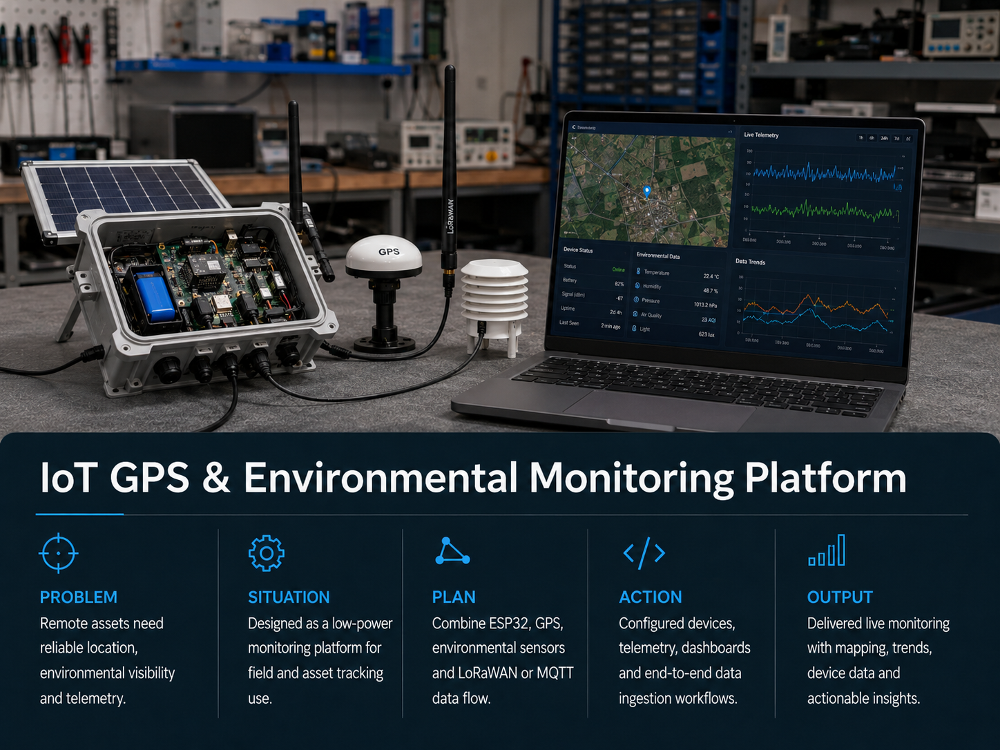
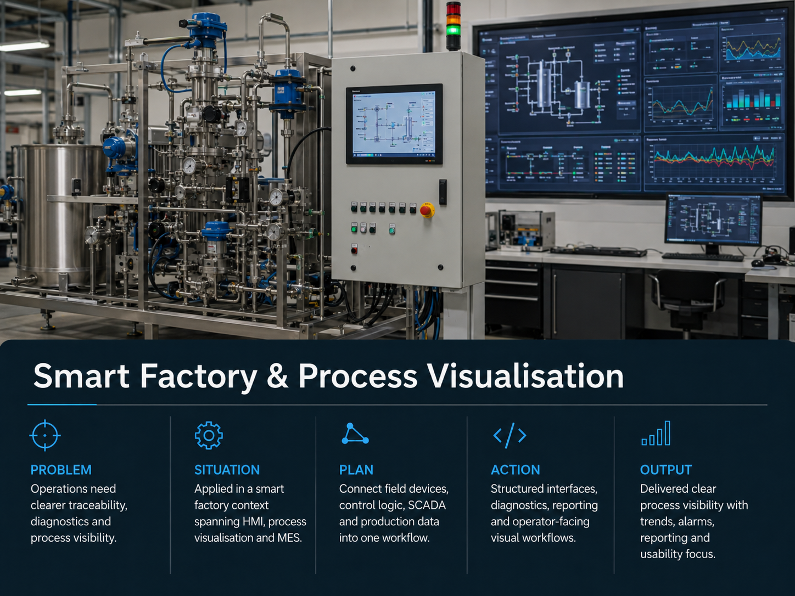
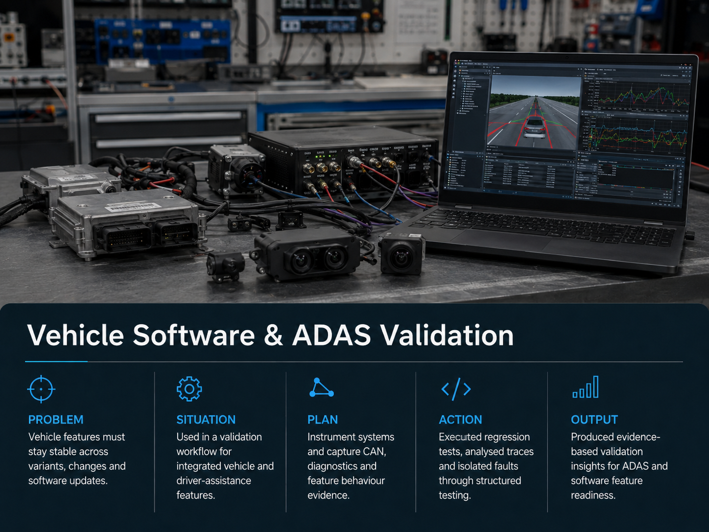
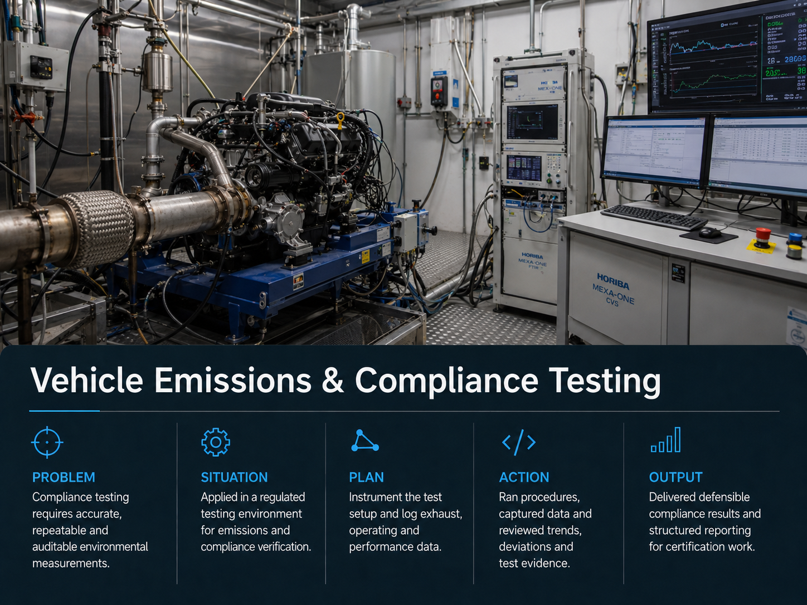

Education
Bachelor of Mechatronics Engineering (Honours)
Deakin University, VIC. Graduated with Distinction, July 2025.
Mechatronics Engineer · Robotics · Automation · AI/ML
Building intelligent, automated and robotic systems from hardware to software.
Mechatronics engineer specialising in robotics, industrial automation, control systems, embedded hardware and applied AI/ML, connecting sensors, actuators, control logic and intelligence into reliable systems.
Hardware plus software identity
01 About
I am a mechatronics engineer with a primary focus on robotics, industrial automation and applied AI/ML. I build systems across the full stack, from mechanical design, PCB layout, embedded firmware and control logic through to ROS 2 autonomy stacks, SCADA platforms, data pipelines and ML-informed monitoring. My work sits where hardware, software and intelligence converge.
My delivery record spans smart factory automation and SCADA migration for regulated pharmaceutical and biotech clients, vehicle software and ADAS validation using CAN analysis, end-to-end IoT telemetry platforms, and robotics projects in ROS 2 with SLAM, path planning and sensor fusion. I hold a Bachelor of Mechatronics Engineering with Honours (Distinction) from Deakin University and am a Member of Engineers Australia. I have full Australian work rights on a Subclass 485 visa and am available immediately.
Education
Deakin University, VIC. Graduated with Distinction, July 2025.
Education
Cardiff Metropolitan University, UK. Distinction, 2016.
02 How I Work
One engineer across the full delivery path: mechanical and electronic design, control and robotics software, applied AI/ML, and structured validation through to commissioning and handover.
Concept and design
Turn requirements into a workable architecture: mechanical layout, electronics, control strategy and the right robotics, automation or AI/ML approach for the problem.
Build and integrate
Develop embedded firmware, PCBs, PLC and ROS 2 logic, integrate sensors, actuators and drives, and connect field devices to data pipelines into one working system.
Validate and commission
Prove behaviour with structured testing, FAT and SAT, CAN and signal analysis, and evidence-based reporting through to commissioning and handover.
Monitor and improve
Keep systems reliable with SCADA, IoT telemetry and dashboards, and apply machine learning for anomaly detection and predictive maintenance.
03 Portfolio
Project cards use real image assets, concise captions and detailed engineering notes without adding unsupported metrics.

Digital twin / industrial AI
Real-time factory digital twin with AI agents, anomaly detection, predictive maintenance and OEE analytics, built as an engineering concept.

Robotics / AI navigation
ROS 2 autonomy concepts using SLAM, A* path planning, odometry, IMU fusion and modular navigation logic.

Embedded sensing
Embedded sensing concept using ESP32, IMU, ToF, Hall effect and magnetometer signals for movement assessment support.

IoT / telemetry
Low-power GPS and environmental monitoring with ESP32, LoRaWAN or MQTT telemetry and live dashboards.

Smart factory / SCADA
HMI, SCADA, MES and batch-system concepts focused on traceability, diagnostics and operator usability.

Automotive validation
Vehicle software validation using structured test procedures, CAN analysis and evidence-based defect reporting.

Compliance testing
Repeatable emissions and compliance testing with instrumentation, data acquisition, QA records and defensible reporting.
Project detail
Project detail
Project detail
Project detail
Project detail
Project detail
Project detail
04 Skills and Tools
A scannable reference grouped by domain, presented as working exposure and practical capability rather than claims of proprietary system ownership. Use the filters to focus on a single area.
05 Experience
JAG Process Solutions Pty Ltd
Ford Motor Company via Invenio
ABMARC
DuxTel Pty Ltd
DuxTel Pty Ltd
IDL, Carbon Revolution and Thornton Engineering Australia Pty Ltd
06 What I Bring
Full-stack robotics: ROS 2, Nav2, SLAM, sensor fusion, path planning and simulation through to physical integration and commissioning.
Industrial automation and SCADA delivery: PLC, HMI, MES, batch systems, platform migration, FAT/SAT, and GMP-regulated validation discipline.
Applied AI/ML: anomaly detection, feature extraction, statistical modelling and data pipeline design integrated into real engineering workflows.
Embedded hardware to firmware: PCB design, ESP32/STM32, embedded C/C++, FreeRTOS, and full sensor and actuator integration.
Mechanical to electrical integration: SolidWorks, Fusion 360, control schematics, VFDs, instrumentation wiring and system commissioning.
Structured quality and validation: evidence-based testing, QA records, ITPs, MDRs, FMEA and documentation built for traceability and regulatory review.
07 Certifications, Training and Standards
Listed where defensible from formal study, professional membership and applied project and industry experience.
Education
Membership
Standards and frameworks (working knowledge)
08 Selected Writing and Notes
Short technical notes and case studies. This section will grow as write-ups are published.
Project note
How the digital twin concept models equipment, generates telemetry and surfaces anomalies, maintenance needs and OEE in real time.
09 Contact
Based in Geelong, Victoria, Australia. Open to roles across robotics, automation, embedded systems, AI/ML and smart factory engineering. Open to relocation within Australia. Subclass 485 visa, full Australian work rights, no employer sponsorship required.